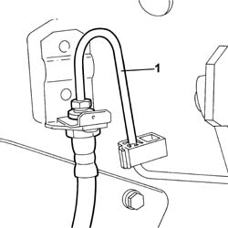
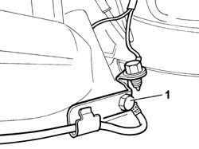
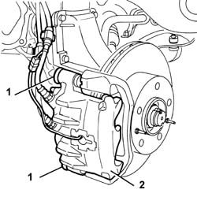

3310A30 FRONT BRAKE CALIPER ONE R R
- Path
- Procedures > 33 BRAKES > 3310 DISC BRAKES > 3310A FRONT DISC BRAKES > 3310A30 FRONT BRAKE CALIPER ONE R R
- Kind
- repair procedure (removal / refitting; the operation number is the code)
- Applies to
- all engines; all production periods
- Interactive page
- https://sloeber94.github.io/elrnDB-fUlss/en/#/179007279
Applies to: all engines; all production periods
 Removing
Removing
 Refitting
RefittingOp. 5530B56 BATTERY DRIP TRAY COVER - R.R.
- Disconnect the negative battery terminal.
- Position the vehicle on a lift.
Op. 4450B10 TYRE INFLATION VALVE CAP - REPLACE
1. use the special wrench to unscrew the brake pipe connection
 | Description | Code | Function |
|---|---|---|---|
1 | Spanner | 1.856.132.000 | Polygonal spanner for brake connector |

Applies to: all engines; all production periods
- Release the brake pipe rubber retainer from its seat.
- Disconnect the electrical connection for the brake pad wear sensor.
1. Unscrew the bracket on the brake caliper for the pad wear sensor electrical connection.

Applies to: all engines; all production periods
1. Undo the bolts securing the brake caliper.
2. Remove the front brake caliper seat.

Applies to: all engines; all production periods
Refitting
Removing- Fit the brake caliper in the housing in the bracket.
- Tighten the brake caliper retaining bolts to torque.
 | Value - daNm | Fastening | Component | Ø |
|---|---|---|---|---|
. | 3,5 | Bolt | SECURING FRONT BRAKE CALIPER TO MOUNT | - |
- Connect the electrical connection for the brake pad wear sensor.
- Secure the brake pipe rubber retainer in its seat.
- Use the special wrench and a torque wrench to tighten the brake pipe connector to torque.
| Description | Code | Function |
|---|---|---|---|
. | Spanner | 1.856.132.000 | Polygonal spanner for brake connector |
Op. 0010T64 BRAKE AND OR CLUTCH FLUID CHECK LEVEL AND TOP UP AS NECESSARY
Op. 0010T65 HYDRAULIC BRAKE SYSTEM BLEED AIR
Op. 4450B10 TYRE INFLATION VALVE CAP - REPLACE
-
- Remove the vehicle from the lift.
Op. 5530B56 BATTERY DRIP TRAY COVER - R.R.
- Connect the negative battery terminal.
Topics linked from this page (3)
- 0010T65 HYDRAULIC BRAKE SYSTEM BLEED AIR
- 4450B10 TYRE INFLATION VALVE CAP - REPLACE
- 5530B56 BATTERY DRIP TRAY COVER - R.R.